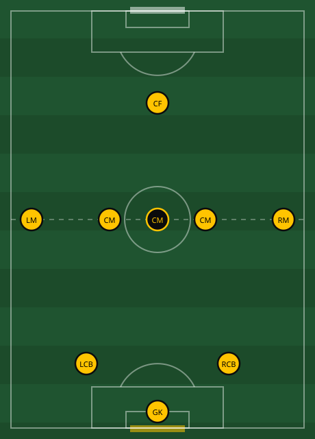

Abbey Lane Hawks PlaybookOur Identity and Tactics
Everything you need for match day. Pick your position, learn the jobs, win the moment.
Everything you need for match day. Pick your position, learn the jobs, win the moment.
Start here
Pick a topic. Each page has the shape, the jobs and what to look for. This page is your position and how we set up.
Our team
2-5-1 is our starting shape — not a cage. Once the whistle goes, the game doesn't stand still, so neither do we. We're a fluid team: you read what's in front of you, make your move, and trust the players around you to cover the gap you leave behind. Your position is where you start, not where you're stuck.

Quick reference
Find your position. Everything across all five situations in one card. The detail for each is on its own page.
If you remember nothing else
Nobody presses alone. The nearest teammate always goes with the first presser.
Whoever's on the ball, everyone else keeps moving to offer a safe pass — never standing still waiting to be found. This is every player, every time we have the ball, not just at restarts.
Go through the middle if it's on — that's always first choice. If it's shut, go round them wide down the flanks. If both are blocked, go over the top with a long pass or a through ball in behind.